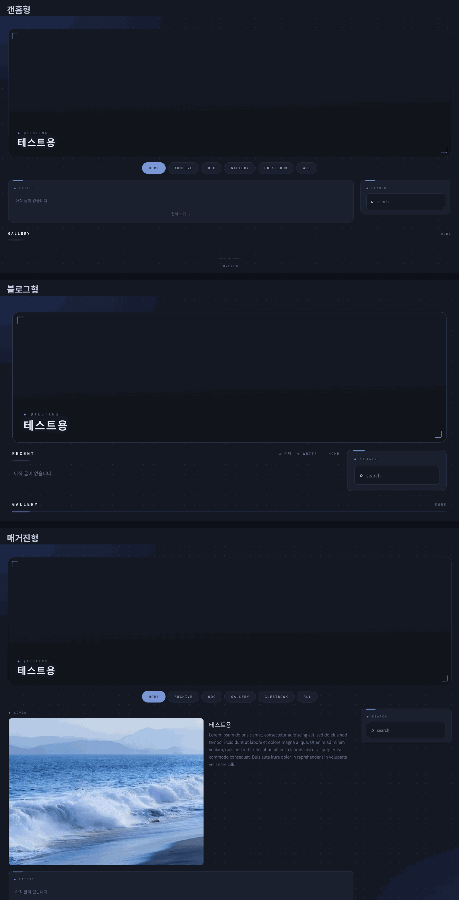
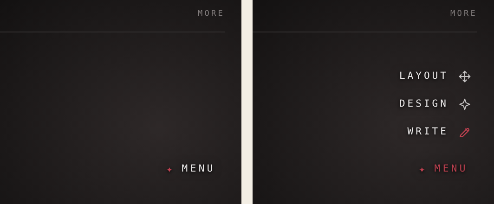

러브로그 · 시작하기
화면 구성과 버튼
홈은 세 가지 구조 중에서 고르고, 오른쪽 아래 ✦ MENU로 편집·꾸미기·글쓰기를 드나듭니다.
홈 구조 3종
- 갠홈형
- 헤더 아래 위젯이 카드로 배열되고 가운데에 고정글·최신글이 뜹니다. 대문 느낌.
- 블로그형
- 헤더 아래 바로 글 목록. 로그 위주라면 이쪽. 홈 그리드 대신 사이드바 위젯이 보입니다.
- 매거진형
- 갠홈 그대로에 가운데 칸 📰 매거진 표지 위젯이 붙박이로 들어옵니다. 표지 글은 자동(최신·대표·고정) 또는 직접 고르기.
꾸미기 → 테마·레이아웃 → 구조에서 바꿉니다.

사진 자리img/ll-screen-structure.png오른쪽 아래 ✦ MENU
내 홈에서만 보입니다. 「✦ MENU」를 누르면 위로 세 가지가 열리고, 하나를 누르거나 바깥을 누르면 닫힙니다. ✦는 홈 포인트색을 따라갑니다.
- LAYOUT — 위젯 편집
- 켜져 있는 동안만 위젯 드래그·↑↓ 이동·스티커 배치가 됩니다. 평소에는 내 홈도 방문자처럼 편하게 봅니다. 켜져 있는 동안에는 ✦가 은은하게 빛납니다.
- DESIGN — 꾸미기
- 설정 대시보드. 왼쪽 칼럼이 HOME(기본 정보 · 위젯 구성 · 카테고리) · DESIGN(테마·레이아웃 · 배경 · 듀얼 테마 · 스티커) · MANAGE(관리)로 묶여 있고, 탭마다 이름 아래에 들어 있는 것이 한 줄로 적혀 있습니다. 탭 안의 섹션은 위쪽 탭으로 바로 이동합니다.
- WRITE — 글쓰기
- 새 글. 게시판 안에서 누르면 그 카테고리가 자동 선택됩니다.

사진 자리img/ll-screen-fabs.png🔔 알림함
- 내 홈에 로그인해 있으면 오른쪽 위 줄에 🔔가 보입니다. 홈 주인에게만 보입니다.
- INBOX — 내 글에 달린 댓글, 방명록, 내가 남긴 댓글·방명록에 달린 답글이 모입니다. 비밀글은 내용 없이 🔒로만 표시되고, 누르면 그 글이나 방명록으로 갑니다.
- NEW — 서로 이웃 홈의 새 글. 잠긴 홈은 LOCKED로만 표시됩니다.
- 안 읽은 수가 🔔 옆에 뜨고, READ ALL로 한 번에 읽음 처리합니다.
- 창 모양은 테마·레이아웃 → 글씨 · 알림함에서 바꿉니다.
사이드바와 기둥
- 사이드바는 왼쪽 / 오른쪽 / 양쪽 중 고르고, 홈 화면의 기둥도 이 설정을 따릅니다.
- 홈에서 가운데 칸에 있던 위젯은 글 목록 화면으로 넘어가면 사이드로 붙습니다. 그때 어느 쪽에 둘지 위젯 ✎의 「카테고리 화면에선 왼쪽/오른쪽」으로 정합니다.
- 위젯 ✎의 🫧 투명을 켜면 카드 배경·테두리 없이 내용만 얹히고, 편집 모드에선 점선으로 자리가 보입니다.